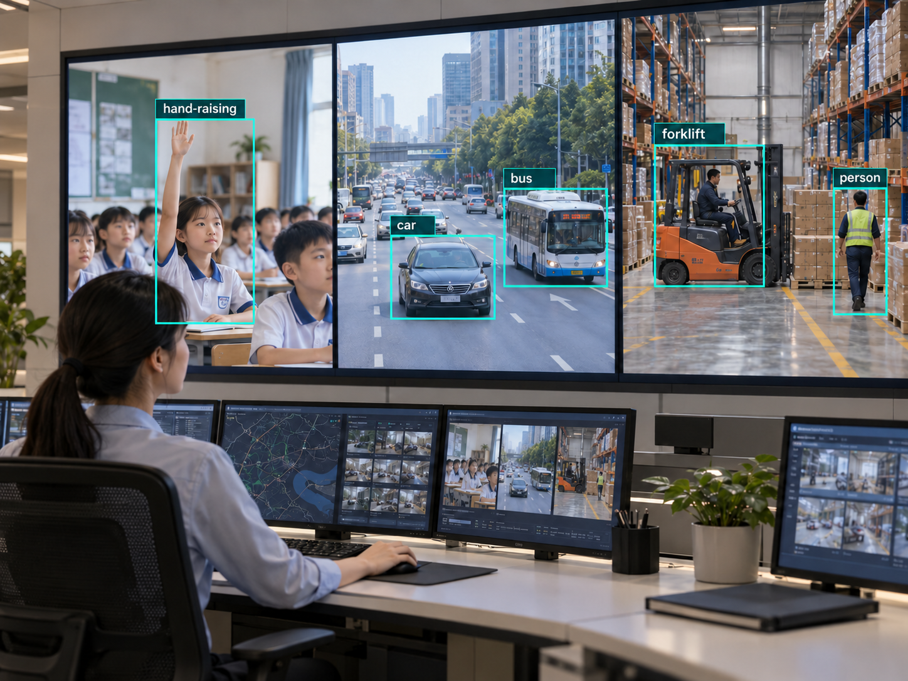

edge · cloud · terminal
— 亮点 01
云边端协同
边缘设备连接摄像头，在本地运行视觉算法，实时分析视频流并识别异常；云端平台统一管理设备状态与位置，汇聚并存储异常事件；监控大屏与手机客户端展示画面与告警，支持查看与处置。
边缘感知→
云端汇聚→
终端响应
云哨·边缘智枢是一套面向公共场所的云边端协同智能平台，集异常事件感知、智能数据分析、告警消息推送与对外 MCP 服务于一体。
团队自研垂直领域计算机视觉算法，首发部署于华为 Atlas 200I DK A2 开发者套件。通过分析摄像头采集的实时视频流，平台能够感知异常事件。
边缘设备集群既可以把算法处理后的视频流实时传输至监控大屏，也可以将检测到的异常事件上传至平台数据库——媒体走流，事件走库，各走各的通道。

edge · cloud · terminal边缘设备连接摄像头，在本地运行视觉算法，实时分析视频流并识别异常；云端平台统一管理设备状态与位置，汇聚并存储异常事件；监控大屏与手机客户端展示画面与告警，支持查看与处置。
平台围绕实时监控、历史告警与智能数据分析构建三类主要界面，覆盖实时查看、单个事件追溯与整体情况研判。告警可推送至 PWA 与原生 App，用户点击通知即进入事件详情，无需持续盯守监控画面。
平台内置 MCP 服务，可接入各类成熟的 AI Agent 客户端。用户可在 Agent 中设置定时任务，让其分析异常事件的发生时段与高发点位，并结合分析结果提出巡查、处置或算法优化建议。
边缘端实时分析视频流，运行视觉算法识别异常；命中规则的事件经幂等校验后上报云端，附带单帧截图作为证据。
汇总分析已发生的异常事件，呈现事件分布与变化情况，帮助管理者发现高发点位与时段，为巡查安排与后续改进提供依据。
事件经规则校验后进入 outbox，由 push-service 经 Web Push 投递至 PWA 与原生 App；点击通知先鉴权再打开详情。
内置受控业务能力入口，可接入各类 AI Agent 客户端；Agent 可定时分析事件分布，结合建议采取后续措施，或为算法优化提供参考。
登记边缘设备、摄像头与所在位置，完成一次性激活。
本地运行视觉算法，实时输出结果与处理后的画面。
显式启用并配置规则，只有满足条件的事件才上报。
云端按账号隔离保存，可查询、查看截图、记录处置结果。
事件触发多端推送，汇聚基础统计辅助整体研判。
单帧检测本身不自动等于告警——detect ≠ alert。只有用户显式启用规则，边缘端才将满足条件的行为作为异常事件上报。
从空白部署机到浏览器端到端验证，部署指南按实际顺序写好了每一步。